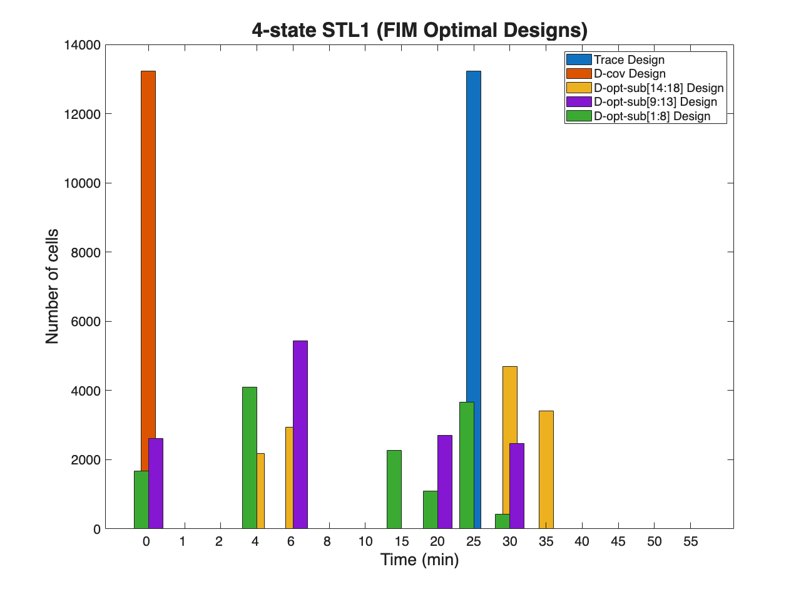

Contents
SSIT/Examples/example_8_FIM_ExperimentDesign
%%%%%%%%%%%%%%%%%%%%%%%%%%%%%%%%%%%%%%%%%%%%%%%%%%%%%%%%%%%%%%%%%%%%%%%%%%%
Section 3.2.8: FIM Optimality Criteria and Experiment Design
* Use Fisher information results to design a next round of experiments
%%%%%%%%%%%%%%%%%%%%%%%%%%%%%%%%%%%%%%%%%%%%%%%%%%%%%%%%%%%%%%%%%%%%%%%%%%%
Preliminaries:
Use the STL1 model from example_01_CreateSSITModels, FSP solutions from example_04_SolveSSITModels_FSP, and loaded experimental data from example_09_LoadingandFittingData_DataLoading
% example_01_CreateSSITModels % example_04_SolveSSITModels_FSP % example_09_LoadingandFittingData_DataLoading
Load pre-run results (pre-loaded data):
load('ExampleSaveFiles/example_9_LoadingandFittingData_DataLoading.mat') % Compute FIM results: fimResults = STL1_4state.computeFIM(scale='log'); % Get the number of cells from loaded experimental data using 'nCells': cellCounts_data = STL1_4state.dataSet.nCells*... ones(size(STL1_4state.tSpan)); % Compile and store propensities: STL1_4state = ... STL1_4state.formPropensitiesGeneral('STL1_4state_design');
Experiment Design
Find the FIM-based designs for a total cells
% Compute the optimal number of cells from the FIM results using different % design criteria: `Trace' maximizes the trace of the FIM; % `D-cov' minimizes the expected determinant of MLE covariance; % `E-opt' maximizes the smallest e.val of the FIM; and % `D-opt-sub[$<i_1>,<i_2>$,...]' maximizes the determinant of the FIM for % the specified indices. The latter is shown for different parameter % combinations, where D-opt-sub[9:13]' are the mRNA-specific parameters % `dr' and `kr1',`kr2',`kr3', and `kr4' (degradation and transcription % reactions). All other parameters are assumed to be known and fixed. nCol = sum(cellCounts_data); nTotal = nCol(1); nCellsOpt_Dcov = ... STL1_4state.optimizeCellCounts(fimResults,nTotal,'D-cov'); nCellsOpt_Trace = ... STL1_4state.optimizeCellCounts(fimResults,nTotal,'Trace'); nCellsOpt_Doptsub = ... STL1_4state.optimizeCellCounts(fimResults,nTotal,... 'D-opt-sub[1:8]'); nCellsOpt_DoptsubR = ... STL1_4state.optimizeCellCounts(fimResults,nTotal,... 'D-opt-sub[9:13]'); nCellsOpt_DoptsubI = ... STL1_4state.optimizeCellCounts(fimResults,nTotal,... 'D-opt-sub[14:18]');
Make a bar chart to compare the different designs
Find which x positions correspond to time=30 and time=60 for off-setting:
t = STL1_4state.tSpan; x = 1:size(t,2); f = figure; bar(x, nCellsOpt_Trace, 0.4); hold on bar(x, nCellsOpt_Dcov, 0.4); bar(x, nCellsOpt_DoptsubI, 0.4); bar(x+0.2, nCellsOpt_DoptsubR, 0.4); bar(x-0.2, nCellsOpt_Doptsub, 0.4); set(gca,'XTick',x,'XTickLabel',t,'FontSize',16) title('4-state STL1 (FIM Optimal Designs)','FontSize',24) xlabel('Time (min)','FontSize',20) ylabel('Number of cells','FontSize',20) legend('Trace Design','D-cov Design', 'D-opt-sub[14:18] Design',... 'D-opt-sub[9:13] Design', 'D-opt-sub[1:8] Design',... 'Location', 'northeast')
